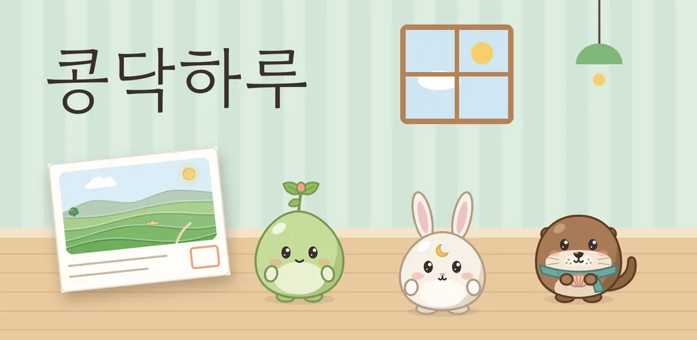
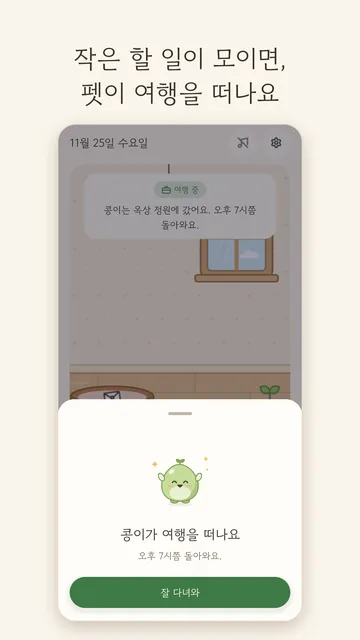
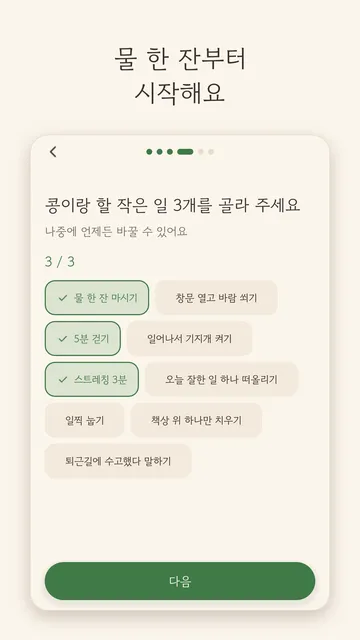
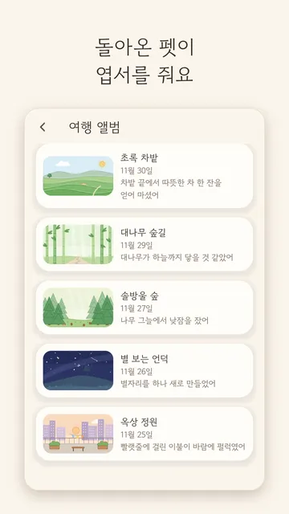

주식회사 텔로스가 만든 앱
콩닥하루 앱펫과 작은 할 일, 기분 기록
물 한 잔, 창문 열기. 작은 할 일을 하나씩 하면 펫이 힘을 얻어 여행을 다녀와요. 기분 기록과 마음 일기도 함께해요.
구글 플레이에서 받기 (무료)안드로이드 8.0 이상에서 쓸 수 있어요.

아무것도 못 한 날에도 괜찮아요
아무것도 못 한 날에도 괜찮아요. 물 한 잔이면 펫이 기뻐해요. 작은 할 일을 마칠 때마다 펫에게 힘이 차고, 힘이 가득 차면 펫이 짧은 여행을 떠났다가 엽서를 들고 돌아와요. 가입 없이 바로 시작해요.


작은 할 일과 습관
- 물 한 잔 마시기, 창문 열고 바람 쐬기, 5분 걷기처럼 아주 작은 일부터 골라요.
- 출근, 야근, 시험, 장마, 명절, 이사 같은 생활 카드가 있어요. 직접 써도 돼요.
- 요일마다 반복할 수 있어요. 하루를 건너뛰어도 벌은 없어요.
펫과 여행
- 처음에 새싹콩, 아기 달토끼, 아기 수달 가운데 한 아이를 골라요.
- 돌본 날이 쌓이면 펫이 조금씩 자라요.
- 여행에서 돌아온 펫은 다녀온 곳 이야기와 작은 선물을 들고 와요. 여행 앨범에 엽서가 한 장씩 모여요.
- 모은 씨앗으로 옷을 입히고 방을 꾸며요.
- 겨울과 설에는 작은 친구들이 놀러 와요. 만난 친구는 작은 친구 도감에 남아요.



기분 기록과 마음 일기
- 지금 기분을 펫 얼굴 다섯 가운데 하나로 골라요. 한 주, 한 달 흐름을 그림으로 봐요.
- 마음 일기: 질문 카드 하나에 짧게 답해요. 감사 질문도 있어요. 쓰기 싫은 날은 넘겨도 돼요.
- 나를 알아가는 질문: 점수 없이 나를 돌아보는 질문 카드
- 오늘의 한마디와 이번 주 돌아보기
숨 고르기와 마음 쉼
- 한숨 돌리기, 잠들기 전, 또렷하게, 기운 내기. 네 가지 숨을 펫과 함께 따라 해요.
- 잠들기 전 숨에는 잔잔한 곡을 함께 틀 수 있어요.
- 빗소리, 파도, 바람, 모닥불 소리를 듣거나, 펫 옆에서 집중 시간을 재요.
친구와 응원, 위젯과 알림
- 친구 코드로 친구를 맺고, 앱이 준 응원 말을 골라 보내요.
- 펫 카드 보내기: 펫 그림 카드를 만들어 보내고 싶은 사람에게 나눠요.
- 바탕화면 위젯에서 펫을 보고, 다음 할 일을 바로 완료로 표시해요.
- 아침 인사와 저녁 마무리 알림 시각은 직접 정해요.
무료, 광고 없음
- 무료이고, 광고가 없어요. 앱 안에서 결제하지 않아요.
- 회원 가입이나 로그인이 없어요.
- 할 일, 기분, 일기 기록은 휴대폰 안에만 남아요. 회사로도 클라우드로도 가지 않아요.
- 친구 기능을 쓸 때만 펫 이름과 모습, 친구 코드, 고른 응원 번호, 이 기기를 구분하는 익명 번호를 서버로 주고받아요.
- 설정의 모든 기록 지우기를 누르면 휴대폰 기록이 지워지고, 인터넷이 되면 서버 기록도 함께 지워져요.
- 자세한 내용은 콩닥하루 개인정보 처리방침에 있어요.
알려 드려요
진단이나 상담을 대신하지 않아요. 마음이 많이 힘들 때는 앱 안 '많이 힘든 날 볼 곳'에서 상담 전화번호를 볼 수 있어요.
콩닥하루 받기 (무료)함께 읽어 보세요
- 아무것도 못 한 날, 물 한 잔부터: 아주 작은 할 일 고르는 법
- 감정 일기, 길게 쓰지 않아도 돼요: 질문 하나로 짧게 쓰는 법
- 텔로스의 다른 앱: 순환체력 코치(경찰 순환식 체력검사 대비 훈련)
궁금한 점은 contact@telos.it.kr 로 보내 주세요.